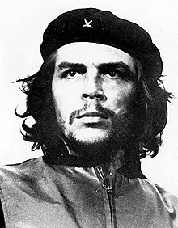

Ernesto Guevara was born to Ernesto Guevara Lynch and Celia de la Serna y Llosa, on 14 June 1928, in Rosario, Argentina. He was the eldest of five children in a middle-class Argentine family of Spanish (including Basque and Cantabrian) descent, as well as Irish by means of his patrilineal ancestor Patrick Lynch. Although Guevara's legal name on his birth certificate was "Ernesto Guevara", his name sometimes appears with "de la Serna" and/or "Lynch" accompanying it. Referring to Che's "restless" nature, his father declared "the first thing to note is that in my son's veins flowed the blood of the Irish rebels". Very early on in life, Ernestito (as he was then called) developed an "affinity for the poor". Growing up in a family with leftist leanings, Guevara was introduced to a wide spectrum of political perspectives even as a boy. His father, a staunch supporter of Republicans from the Spanish Civil War, often hosted many veterans from the conflict in the Guevara home. Despite suffering crippling bouts of acute asthma that were to afflict him throughout his life, he excelled as an athlete, enjoying swimming, football, golf, and shooting, while also becoming an "untiring" cyclist. He was an avid rugby union player, and played at fly-half for Club Universitario de Buenos Aires. His rugby playing earned him the nickname "Fuser"—a contraction of El Furibundo (raging) and his mother's surname, de la Serna—for his aggressive style of play.